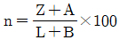
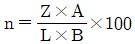
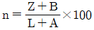
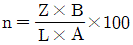
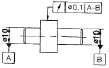
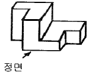
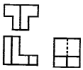
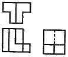
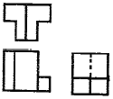
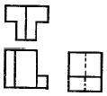

금형기능사 (2014-10-11 기출문제)
1과목: 임의구분
1. 주철을 고온으로 가열하였다 냉각하는 과정을 반복하면 부피가 더욱 팽창하게 되는데，이러한 주철의 성장 원인으로 틀린 것은?
- 흡수된 가스의 팽창
- 펄라이트 조직 중 Fe3C의 흑연화에 따른 팽창
- 페라이트 조직 중의 Si의 산화에 의한 팽창
- 서냉에 의한 시멘타이트의 석출로 인한 팽창
(정답률: 71%)

2. 다이캐스팅용 알루미늄 합금으로 피삭성과 주조성이 좋고, 용도별 기호 중 AI-Si-Cu계인 것은?
- ALDC 1
- ALDC 3
- ALDC 4
- ALDC 7
(정답률: 66%)
3. 강에 S, Pb 등을 첨가하여 절삭가공시 연속된 가공칩의 발생을 방지하고 피삭성을 좋게한 특수강은?
- 내식강
- 내열강
- 쾌삭강
- 자석강
(정답률: 90%)
4. 열가소성 플라스틱의 일종으로 비중이 약 0.9이며，인장강도가 약 28〜38 MPa 정도이고 포장용 노끈이나 테이프，섬유，어망, 로프 등에 사용되는 것은?
- 폴리에틸렌
- 폴리프로필렌
- 폴리염화비닐
- 스티롤
(정답률: 65%)
5. 담금질 냉각제 중 냉각속도가 가장 큰 것은?
- 물
- 소금물
- 기름
- 공기
(정답률: 82%)
6. 금속을 상온에서 소성변형 시켰을 때, 재질이 경화되고 연신율이 감소하는 현상은?
- 재결정
- 가공경화
- 고용강화
- 열변형
(정답률: 78%)
7. 알루미늄의 특성에 대한 설명으로 틀린 것은?
- 합금재질로 많이 사용한다.
- 내식성이 우수하다.
- 용접이나 납접이 비교적 어렵다.
- 전연성이 우수하고 복잡한 형상의 제품을 만들기 쉽다.
(정답률: 84%)
8. 방향제어 밸브의 조작방식 중 기계조작 방식에 속하지 않는 것은?
- 플런저 방식
- 직접 파일럿 방식
- 롤러 방식
- 스프링 방식
(정답률: 68%)
9. 편 로드형 공기압 실린더의 로드 후진 시 유량이 200cm3/sec이고，피스톤의 면적이 0.01m2이며，로드의 면적이 0.0⑤m2이다. 이 실린더의 후진 속도는? (단，로드에 부착된 도그가 전진할 때를 실린더 전진으로 한다.)
- 0.4m/sec
- 0.04m/sec
- 0.2m/sec
- 0.02m/sec
(정답률: 58%)
10. "일정량의 공기를 온도가 동일한 상태에서 압축하면 압력이 상승하게 되며，그 때의 체적은 압력과 서로 반비례한다." 는 법칙은?
- 보일의 법칙
- 샤를의 법칙
- 보일-샤를의 법칙
- 연속의 법칙
(정답률: 71%)
11. 공기 압축기의 선정 기준으로 볼 수 없는 것은?
- 압축공기 토출량
- 토출 압력
- 냉각 방식
- 사용 밸브의 종류
(정답률: 64%)
12. 다음 중 유압 장치에 대한 설명으로 맞는 것은?
- 작은 장치로 큰 힘을 내기가 어렵다.
- 힘을 무단으로 변속할 수가 없다.
- 기계식과 비교하여 마찰 및 마모가 많다.
- 유압유는 온도의 영향을 받기 쉽다.
(정답률: 67%)
13. 어큐물레이터(축압기)의 사용목적이 아닌것은?
- 에너지 보조
- 서지압(충격압)의 보호
- 유체의 맥동 감소
- 냉각효과로 인한 응축수 분리용이
(정답률: 57%)
14. 성형 사이클 단축의 최대 요인은?
- 이젝터 방법
- 러너의 크기
- 금형 냉각시간
- 사출 재료
(정답률: 69%)
15. 게이트에 의해서 충전량을 제한하고 게이트 부근에서 급속히 고화시켜서 사출압력의 손실을 막는 표준게이트의 특성으로 틀린 것은?
- 압력 손실이 작아지며 스프루의 끝 다듬질을 충분히 해야 한다.
- 단면 형상이 단순하기 때문에 가공이 용이하다.
- 게이트의 치수를 쉽고 신속하게 수정할 수있다.
- 거의 모든 수지에 적용할 수 있다.
(정답률: 45%)
16. 사출플런저의 스크루 직경이 36 mm, 스트로크가 80 mm 일때 사출용적은 약 몇 cm3인가?
- 8.143
- 81.43
- 814.30
- 81430
(정답률: 67%)
17. 사출성형 형체기구의 구조는 토클식과 직압식이 있다. 직압식의 특징으로 틀린 것은?
- 형의 개폐속도 제어가 용이하다.
- 형 열기의 시간을 단축하는 것이 용이하다.
- 금형의 설치 조정이 용이하다.
- 스트로크를 크게 할 수가 있고 조정이 용이하다 .
(정답률: 41%)
18. TV, 라디오，청소기의 케이스，전화기 본체 등에 사용되는 수지로서 부타다엔，아크릴로니트릴，스티렌의 세 성분으로 합성되어 있는 수지는?
- TPE 수지
- ABS 수지
- PVC 수지
- POM 수지
(정답률: 73%)
19. 성형품의 변형원인과 관련이 적은 것은?
- 성형온도
- 금형온도
- 성형압력
- 성형기 크기
(정답률: 81%)
20. 열가소성 수지에 해당되지 않는 것은?
- 폴리에틸렌
- 폴리아미드
- 멜라민
- 폴리스티렌
(정답률: 73%)
2과목: 임의구분
21. 사출금형에서 이젝터 플레이트의 리턴 방식이 아닌 것은?
- 스프링에 의한 방법
- 스프루 로크 핀에 의한 방법
- 리턴 핀에 의한 방법
- 유압 또는 공압 실린더를 이용하는 방법
(정답률: 56%)
22. 웰드 라인(Weld line)에 대한 개선대책이 아닌 것은?
- 수지온도를 낮게 한다.
- 수지를 충분히 건조한다.
- 살 두께를 조절한다.
- 금형에 에어 벤트를 설치한다
(정답률: 52%)
23. 에어 벤트(Air vent)에 대한 설명 중 옳은 것은?
- 에어 압력을 이용하여 이젝터를 작동시키는 기구
- 캐비티에 있는 가스를 외부로 배출시키는 통로
- 금형에 형체력을 작용시키는 기구
- 공기를 캐비티에 주입시키는 통로
(정답률: 64%)
24. 펀치와 다이재료 중 펀치재료를 약간 연한 재질을 사용하는 이유로 가장 거리가 먼 것은?
- 값이 절약될 수 있으며 가공이 용이하다.
- 형의 뜯김이 일어날 경우 한쪽만 손상되므로 수정이 용이하다.
- 형이 어긋났을 경우 양쪽 모두 파손됨을 방지한다.
- 형이 어긋났을 경우 프레스에 걸리는 과부하를 방지한다.
(정답률: 55%)
25. 블랭킹 가공에서 전단각(shear angle)은 주로 어디에 주는가?
- 펀치
- 다이
- 스트리퍼
- 파이롯핀
(정답률: 66%)
26. 프레스 기계 선택시 고려 할 사항으로 거리가 먼 것은?
- 가공방법
- 생산량의 정도
- 소재의 모양, 품질 및 치수
- 치공구의 절감
(정답률: 75%)
27. 드로잉 한계를 향상 사키기 위해 펀치의 곡률 반경은 얼마로 하는 것이 가장 좋은가? (단，t는 소재두께， 는 곡를 반경이다.)
- (0~3)t≦rp≦(0~10)t
- (4~6)t≦rp≦(10~20)t
- (7~9)t≦rp≦(20~30)t
- (10~12)t≦rp≦(30~40)t
(정답률: 72%)
28. 평평한 블랭크를 이용하여 원통형，각통형, 반구형, 원추형 등의 이음새 없는 중공 용기를 성형하는 프레스작업을 무엇이라 하는가?
- 버링 작업
- 컬링 작업
- 드로잉 작업
- 스웨이징 작업
(정답률: 54%)
29. 프레스 금형의 재료이용를 n(%)를 구하는 식은? (단, A : 제품의 면적(mm2)，B : 재료의 폭(mm)，L : 재료 전체길이(mm)，Z : 제품의 수량)




(정답률: 61%)
30. 금형제품을 드로잉하여 완 성 가공하였다 . 블랭킹 한 소재직경이 125m이고, 완성 가공한 제픔의 직경이 85mm 이었다면 드로잉률은?
- 0.32
- 0.46
- 0.68
- 0.72
(정답률: 59%)
31. 굽힘 금형에서 스프링백을 감소시키는 방법이 아닌 것은?
- 경도가 경한 재료를 사용한다.
- 펀치 하면에 도피 홈을 준다.
- 펀치 하면을 원호로 한다.
- 캠 기구를 사용한다.
(정답률: 52%)
32. 금형에서 가이드포스트를 설치하여 제작하는 이점이 아닌 것은?
- 정밀한 제품을 생산할 수 있다.
- 대량생산에 적합하다.
- 펀치를 정확하게 안내한다.
- 소재의 이송이 정확하다.
(정답률: 43%)
33. 맞춤 핀(dowel pin)을 사용하는 목적에 대한 설명 중 거리가 먼 것은?
- 소재의 이송을 정확히 해준다.
- 금형부품의 복원조립을 한다.
- 금형조립 시 위치결정을 한다.
- 측압력의 이동방지를 할 수 있다.
(정답률: 47%)
34. 연강에 드릴작업을 할 때 드릴의 선단 각은?
- 90°
- 118°
- 125°
- 138°
(정답률: 83%)
35. NC 기계에서 수동으로 데이터를 입력하여 가공하는 방법을 무엇이라 하는가?
- JOG
- EDIT
- MDI
- TAPE
(정답률: 76%)
36. 100mm의 사인 바(sine bar)에 의해서 30°를 만드는데 필요한 게이지블록의 높이 (mm)는?
- 30
- 40
- 50
- 60
(정답률: 55%)
37. NC의 발달 과정으로 옳은 것은?
- NC→ONC→CNC→FMS
- NC→CNC→DNC→FMS
- NC→FMS→CNC→DNC
- NC→ONC→FMS→CNC
(정답률: 69%)
38. 금속 표면 일부를 노출시키고 다른 부분은 피복시켜，산 또는 알칼리 용액 속에 넣어 화학반응으로 노출면을 용해，제거시키는 방법으로 플라스틱 성형품 표면에 장식효과를 넣기 위해 널리 이용하는 방법은?
- 부식가공
- 전주가공
- 전해가공
- 슈퍼피니싱
(정답률: 64%)
39. 연삭 숫돌의 표시 "WA 46 - H8 V"에서 WA의 의미는?
- 입도
- 결합도
- 조직
- 입자
(정답률: 67%)
40. 강의 표면경화 열처리 방법 중에서 화학적인 방법이 아닌 것은?
- 화염 경화법
- 침탄법
- 질화법
- 금속침투법
(정답률: 62%)
3과목: 임의구분
41. 방전가공의 특징을 설명한 것 중 틀린 것은?(오류 신고가 접수된 문제입니다. 반드시 정답과 해설을 확인하시기 바랍니다.)
- 전극을 사용한다.
- 가공 정밀도가 높다
- 복잡한 형상의 금형에 적합하다.
- 경도，재질에 관계없이 가공한다.
(정답률: 72%)
42. 회전하는 통 속 에 가공물，숫돌입자, 콤파운드 등 을 함께 넣고 회전시켜 서 로 부딪치며 가공되어 매끈한 가공면을 얻는 가공법은?
- 연삭 가공
- 지그 그라인딩 가공
- 숏 피닝 가공
- 배럴 가공
(정답률: 58%)
43. 절삭속도 20m/min으로，지름10mm의 구멍을 뚫고자 한다. 드릴의 주축 회전수는 약 몇 rpm 인가?
- 617
- 637
- 657
- 677
(정답률: 68%)
44. 공작물의 두 면에 지그를 설치하여 단순가 공을 할 때 사용되는 박스 지그의 일종으로 정밀한 가공보다 생산속도를 증가시킬 목적으로 사용되는 지그는?
- 채널 지그(channel jig)
- 플레이트 지그(plate jig)
- 분할 지그(indexing jig)
- 샌드위치 지그(sandwich jig)
(정답률: 64%)
45. 사출성형 불량 중 웰드라인을 발생하게 하는 원인으로 가장 거리가 먼 것은?
- 수지의 흐름이 불량하다.
- 게이트의 위치가 부적당하다.
- 수지 중에 수분이 포함되어 있다.
- 금형의 체결력이 부족하다.
(정답률: 43%)
46. 프레스 제품의 보강이나 외관을 좋게 하기위해 폭이 좁은 융기선을 만드는 금형은?
- 버링 금형
- 컬링 금형
- 비딩 금형
- 벌징 금형
(정답률: 49%)
47. 레이저 가공기의 특징이 아닌 것은?
- 임의의 위치에서 가공이 가능하다.
- 비접촉 가공이므로 공구의 마모가 없다.
- 자동가공이 어렵고， CNC 공작기계 사용이 불가능하다.
- 금속 및 세라믹，가죽 등 비금속 가공이 가능하다
(정답률: 73%)
48. 브로칭 머신에 대한 설명으로 가장 옳은 것은?
- 기어의 외경을 가공하는 기계이다.
- 구명 내면의 복잡한 형상을 주로 가공하는 기계이다.
- 브로치라는 공구가 고속 회전하며 가공한다. ® 큰 평면 가공이 용이하다.
- 큰 평면 가공이 유리하다.
(정답률: 53%)
49. 지그를 사용하여 공작물에 구명을 뚫었더니 오차가 생겼다면, 그 오차가 생긴 가장 큰 이유는?
- 부시와 공구 낱의 틈새가 적다.
- 부시와 공구 날의 틈새가 크다.
- 공구 날이 정확하다.
- 부시가 중간 끼워맞춤 되어 있다.
(정답률: 81%)
50. 공작물이 대형이거나 무거운 제품에 구멍을 뚫고자 할 때 일감을 고정하고 스핀들을 움직여서 구멍을 뚫는 기계는?
- 레이디얼 드릴링 머신
- 다축 드릴링 머신
- 탁상 드릴링 머신
- 직립 드릴링 머신
(정답률: 68%)
51. 다음 중 도면에 ø100 H6/p6 로 표시된 끼워 맞춤의 종류는?
- 구멍 기준식 억지 끼워 맞춤
- 구멍 기준식 중간 끼워 맞춤
- 축 기준식 중간 끼워 맞춤
- 축 기준식 헐거운 끼워 맞춤
(정답률: 61%)
52. 제품을 규격화 하는 이유로 틀린 것은?
- 품질이 향상된다.
- 생산성을 높일 수 있다.
- 제품 상호 간 호환성이 좋아진다.
- 생산단가를 높여 이익을 극대화 할 수 있다.
(정답률: 81%)
53. KS B 1311 TG 20 × 12 × 70 으로 호칭되는 키의 설명으로 옳은 것은?
- 나사용 구명이 있는 평행키로서 양쪽 네모형이다.
- 나사용 구명이 없는 평행키로서 양쪽 둥근형이다.
- 머리붙이 경사키이며 호칭치수는 20×12 이고 호칭길이는 70 이다.
- 둥근바닥 반달키이며 호칭길이는 70 아다.
(정답률: 66%)
54. 줄 다듬질의 가공방법 약호는?
- BR
- FF
- GB
- SB
(정답률: 71%)
55. 구름베어링의 안지름이 100 mm 일 때, 구름베어링의 호칭번호에서 안지름 번호로 옳은 것은?
- 10
- 20
- 25
- 100
(정답률: 72%)
56. 치수에 사용되는 치수보조 기호의 설명으로 틀린 것은?
- Sø : 원의 지름
- R : 반지름
- □ : 정사각형의 변
- C : 45 ° 모따기
(정답률: 71%)
57. ISO 표준에 따라 관용나사의 종류를 표시하는 기호 중 테이퍼 암나사를 표시하는 기호는?
- R
- Rc
- Rp
- G
(정답률: 65%)
58. 도형이 대칭인 경우 대칭 중심선의 한쪽도형만을 작도할 때 중심선의 양 끝부분의 작도 방법은?
- 짧은 2개의 평행한 굵은 1점 쇄선
- 짧은 2개의 평행한 가는 1점 쇄선
- 짧은 2개의 평행한 굵은 실선
- 짧은 2개의 평행한 가는 실선
(정답률: 56%)
59. 그림에서 표시된 기하 공차는?

- 동심도 공차
- 경사도 공차
- 원주 흔들림 공차
- 온 흔들림 공차
(정답률: 73%)
60. 그림과 같은 입체의 제 3각 정투상도로 가장 적합한 것은?





(정답률: 82%)